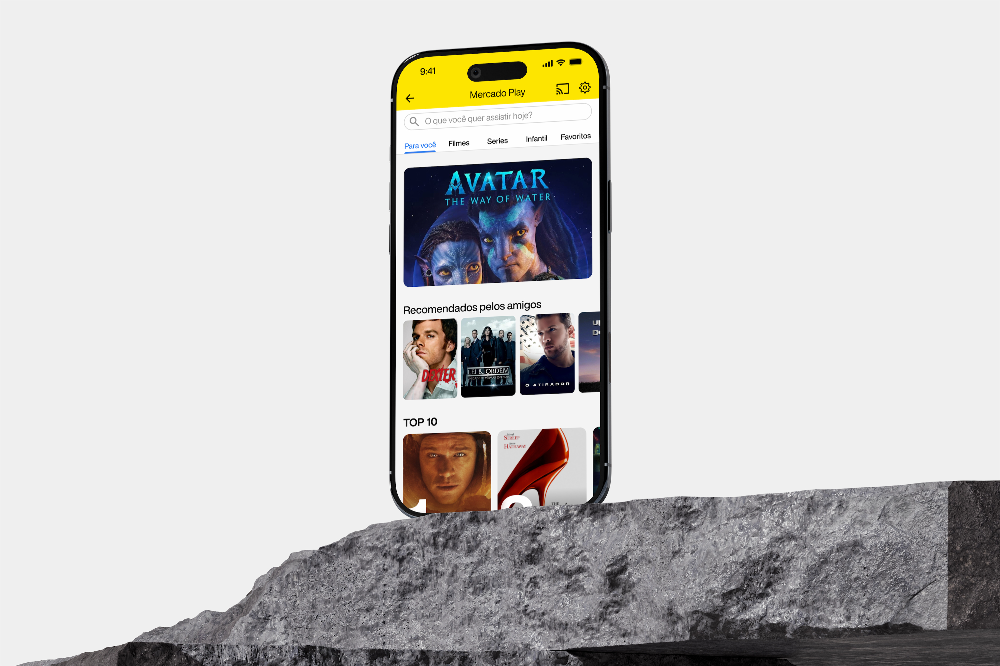
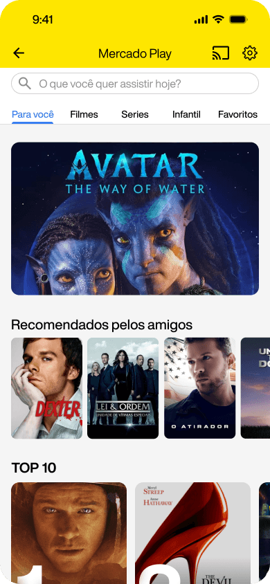
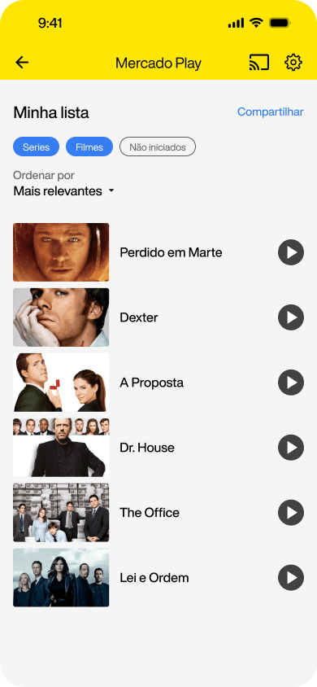
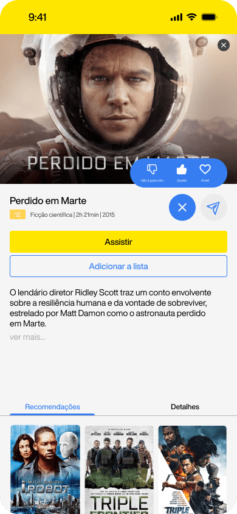
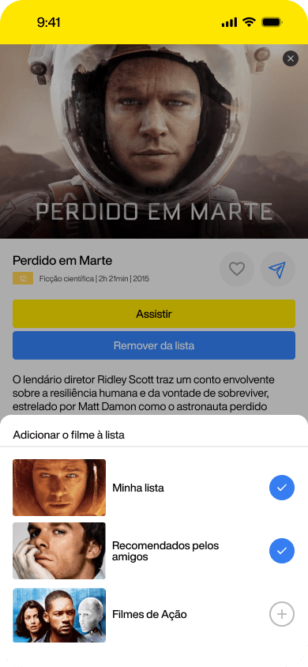

A feature redesign to reverse a measured 4% drop in platform usage — by making social recommendations native to the product.
Analytics showed a measurable decline against the previous quarter — and pointed to where the leak was, never why. On a content platform, recurrence compounds. We opened research before opening Figma.
Four interviews, ages 21–60, converged on the same workaround: users were leaving Meli Play to ask friends what to watch, and saving titles in side conversations to remember later.
"Tenho uma conversa de WhatsApp comigo mesma pra anotar todos os filmes que o pessoal do trabalho me recomenda."Carla · 21
"A tecnologia não é minha praia. Gostaria de ter um lugar com os conteúdos destacados pela minha família."Roberto · 60
The catalog wasn't the problem. The social layer around it was missing.
A sweep of the four incumbents — each owns a distinct wedge, all miss the same layer.
Five features around a single idea: the user's people become the strongest recommendation engine the app has. Every feature anchors to a direct quote from research.
4 interviews (21–60) · CSD matrix · benchmark · hi-fi in Figma · usability testing.



